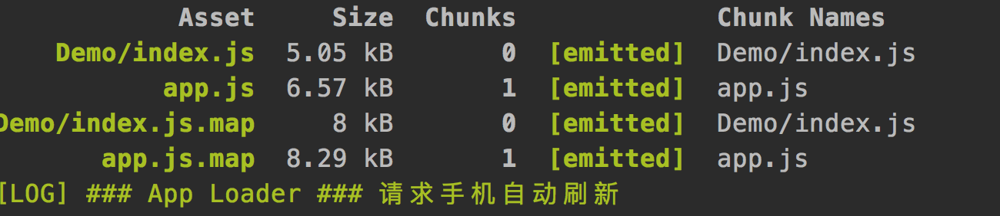

hap-toolkit工具编译过程
1、npm run build
const file = normalise(`${toolsPath}/webpack.config.js`)
commandRun(`${c('cross-env')} NODE_PLATFORM=na NODE_PHASE=dv ${c('webpack')} --config ${file}`)
// 打印命令
// $/demo/node_modules/.bin/cross-env NODE_PLATFORM=na NODE_PHASE=dv
// $/demo/node_modules/.bin/webpack --config
// $/demo/node_modules/hap-toolkit/tools/webpack.config.js
开发环境(development)和生产环境(production)
NODE_PLATFORM=na
NODE_PHASE=dv // 为什么不是NODE_ENV=dv
const nodeConf = function parseEnv () {
const config = {
// 平台：na
NODE_PLATFORM: process.env.NODE_PLATFORM,
// 阶段: dv|qa|ol
NODE_PHASE: process.env.NODE_PHASE,
// 是否注入测试框架
NODE_TEST: process.env.NODE_TEST
}
colorconsole.info(`配置环境：${JSON.stringify(config)}`)
return config
}
...
// 环境配置
if (nodeConf.NODE_PHASE === 'dv') {
// 开发：sourcemap
if (!options.envDisableSourceMap) {
webpackConf.devtool = 'source-map'
}
}
else {
// 正式：压缩去重
webpackConf.plugins.push(new webpack.optimize.DedupePlugin())
webpackConf.plugins.push(new webpack.optimize.UglifyJsPlugin())
}
1.1、分析 webpack.config.js 配置文件
Webpack.config.js 主要有：
const webpackConf = { entry: zipPages // 多文件入口配置 module: {rules: []}, // loader模块 plugins：[] // 插件 ... output: { path: pathBuild, filename: '[name]' } }
zipPages对象配置的多个入口，每个入生成一chunk; chunk的名称是zipPages对新键值对的中key值
- zipPages：构造多文件入口配置
{ 'About/index.js': '/Users/chenyong/Work/project/cardTest/src/demo/src/About/index.ux?uxType=page',
'Demo/index.js': '/Users/chenyong/Work/project/cardTest/src/Demo/index.ux?uxType=page',
'DemoDetail/index.js': '/Users/chenyong/Work/project/cardTest/src/DemoDetail/index.ux?uxType=page',
'app.js': '/Users/chenyong/Work/project/cardTest/src/app.ux?uxType=app' }
// JSON对象的key代表输出path,value代表输入path(携带文件type类型参数，留作后面使用)

posthock
// 加载配置
loadWebpackConfList(webpackConf)
findModuleList (parentDir)
// parentDir=$/demo01/node_modules/hap-toolkit/tools
// 返回moduleList = ['debugger', 'packager','server']
// 通过loadWebpackConfList() 执行如下path路径下的webpack.config.js的postHook方法，收集添加loader和plugin
[ { name: 'debugger',
path: haptoolkit },
{ name: 'packager',
path: haptoolkit },
{ name: 'server',
path: haptoolkit },
{ name: '$/demo/config' } // 预留配置，用于项目额外的配置
]
- webpackConf.devtool = 'source-map' 配置suorce-map：便于跟踪错误和警告
// 环境配置
if (nodeConf.NODE_PHASE === 'dv') {
// 开发：sourcemap
if (!options.envDisableSourceMap) {
webpackConf.devtool = 'source-map'
}
}
else {
// 正式：压缩去重
webpackConf.plugins.push(new webpack.optimize.DedupePlugin())
webpackConf.plugins.push(new webpack.optimize.UglifyJsPlugin())
}
1.2、执行loader
完成webpack.config.js配置后，开始loader的执行
初始化时有两个基本loader:
处理ux文件的ux-loader
处理js文件的： module-loader.js、babel-loader
1.3 执行plugin
- new webpack.DefinePlugin() // 定义环境变量
- new ResourcePlugin() //
- new ZipPlugin() // 压缩代码
- new webpack.LoaderOptionsPlugin()